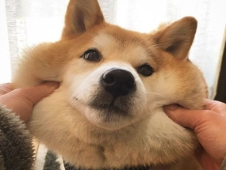

Походження
Собака японська акіта-іну - це легендарна домашня тварина Японії, відома місцевим жителям з давніх-давен. Не варто плутати японську і американську акіту - це різні собаки. Японська акіта іну виникла північ від Японії у провінції Акіта - саме так собаки отримали свою назву. Достеменно невідомо, коли саме ці тварини сформувалися як порода, однак перші письмові свідчення відносяться до початку 17 століття. У ті далекі часи Акіта-Іну використовувалася для охорони імператорської сім'ї.
Крім того, члени імператорської сім'ї любили полювати з цими собаками на дрібну та велику дичину – у це складно повірити, але з ними ходили навіть на ведмедя. Це дуже яскраво характеризує особистість тварини, адже акіта має сміливий і водночас добродушний характер. Щоб зрозуміти доброту цих собак, можна навести яскравий приклад - у лондонському зоопарку малюка акіта-іну одного разу використовували як няньку-старшого брата для тигреня. І пес чудово впорався із цим завданням.
Перша акіта-іну потрапила до Америки в 1937 році, разом із видатною сліпоглухонімою жінкою свого часу Хеллен Келлер. Ця ідея прийшла Хеллен після відвідування статуї собаки Хатіко, розташованої в Сібуї. Почувши про незвичайну відданість цієї тварини, а також історію цих собак в цілому, Хеллен вирішила забрати одну акіту з собою. Звали її Камікадзе-го.
У повоєнний час американські військовослужбовці привозили із Японії цих собак додому, завдяки чому сформувалася окрема порода американська акіта. Однак, серед заводчиків і досі існує суперечка щодо відмінності порід японська та американська акіта іну, оскільки японці не бажають визнавати американських собак окремою породою. Причому багато хто дотримується цього правила навіть сьогодні, незважаючи на те, що суперечка триває більше
Особистість
Японський собака акіта іну – це справжній герой. Або швидше сказати - справжній самурай. Акіта-іну ніколи не відступає в бою, відрізняється величезною відданістю своїй сім'ї та господареві, і слідуватиме за ними незважаючи ні на що. У колі своїх улюблених людей це надзвичайно ніжні, лагідні та доброзичливі собаки, з якими завжди приємно провести час. Люблять брати участь у всіх сімейних справах, почуватися частиною колективу.
Порода акіта-іну має велику кількість внутрішньої енергії, любить різноманітні ігри та всілякі розваги, іграшки, прогулянки. Їм необхідні фізичні навантаження для того, щоб підтримувати м'язову масу в постійному тонусі, проте, якщо ви не готові забезпечити своєму вихованцю щоденні тренування, принаймні влаштовуйте тривалі прогулянки, щоб собака міг побігати. Хороша ідея також – активні ігри.
Порода акіта-іну схильна до сильної міжстатевої та міжвидової агресії, тобто ці собаки агресивно налаштовані по відношенню до інших собак, кішок, особливо якщо вони протилежної статі. Це можна назвати загальним, властивим саме породі, але з нею можна боротися у вигляді соціалізації - раннього знайомства коїться з іншими домашніми тваринами - кішками і собаками, розвитку дружніх відносин із нею, і навіть знайомства коїться з іншими людьми, звуками, запахами, ситуациями.
Вимагає правильного підходу у вихованні через велику природну впертість. Акіта-іну – порода, яка добре ставиться до дітей, любить з ними дружити, грати, ходити на прогулянки та взагалі проводити час. При цьому – усвідомлюючи свою відповідальність за дитину. Ці тварини мають дуже розвинений інтелект, чудово розуміють своїх господарів, розуміють все, що відбувається навколо них, і відчувають емоційну обстановку.
Акіта-іну люблять висловлювати свої емоції через голос, і мають для цього масу різноманітних звуків - бурчання, гавкіт, виття і підвивання, повизгування і скиглення - все, що ви тільки можете собі уявити. Ці собаки не рекомендуються для недосвідчених або боязких власників, тому що з слухняністю вони мають проблеми.
Здоров'я
Хотя порода собак акита-ину сильная, выносливая, она не лишена определенных проблем со здоровьем, и склонна к следующим заболеваниям:
дисплазия тазобедренного сустава - наследственное заболевание;
расширение желудка-вольвус , он же в народе заворот кишок;
гипотиреоз - заболевание щитовидной железы. Считается, что он ответственен за такие состояния, как: эпилепсия , алопеция (выпадение волос), ожирение, летаргия, гиперпигментация, пиодермия и другие кожные заболевания;
прогрессивная атрофия сетчатки;
сальный аденит - является серьезной проблемой у акиты-ину. Это генетическое заболевание часто ошибочно принимают за гипотиреоз, аллергию или другие состояния. Когда у собаки есть СА, по неизвестным причинам сальные железы в коже воспаляются и, в конечном счете, разрушаются.
Грумінг
Густа, з підшерстком шерсть собаки акіта-іну потребує вичісування 2 рази на тиждень. Коли собака линяє – за потребою, але краще вичісувати частіше. Також не забувайте очищати після сну очі вашої домашньої тварини від відкладень, а також слідкувати за чистотою вух. Пазурі підрізають три рази на місяць, купають тварину 1-2 рази на тиждень.